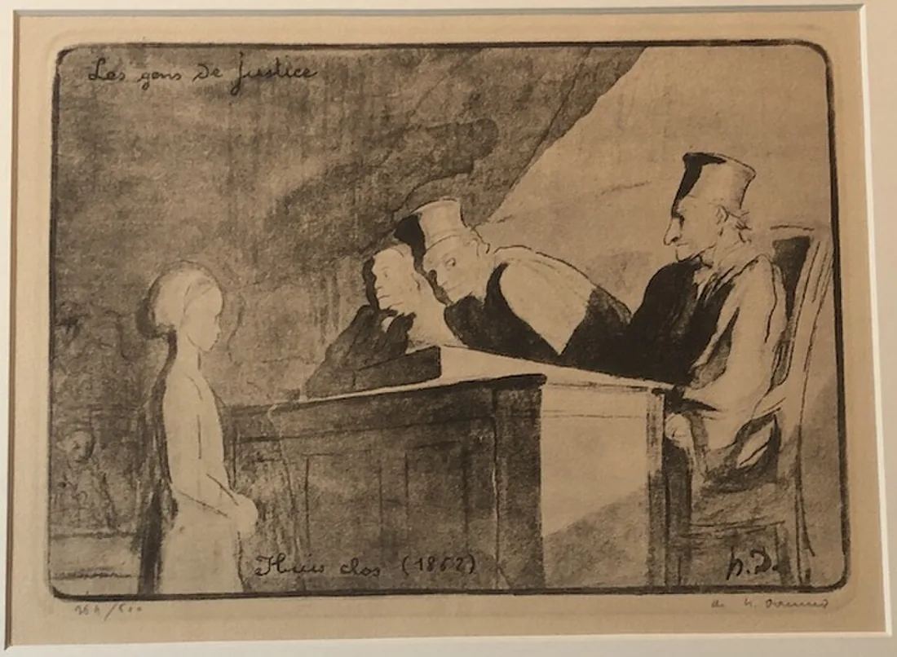

01Justiça e vida em comum
Uma regra igual é sempre justa?
Numa gravura de Honoré Daumier, uma rapariga está de pé diante de três homens de toga, sentados numa bancada alta. Aqui decides casos, ouves as razões de outras pessoas e pões a tua regra à prova.

Honoré Daumier, Les gens de justice. Gravura. Wikimedia Commons. Domínio público.

Começa por aqui
Quem fica com o quê?
A escola pode emprestar uma câmara em seis sessões de uma hora. Três projetos pedem quatro sessões cada. Escolhes uma regra de distribuição, testa-la sem saberes qual é o teu projeto e respondes a uma objeção. Podes mudar de ideias.
Abrir Quem fica com o quêOu escolhe outra pergunta
O elétrico não trava: desvias ou segues em frente?
Vês Michael Sandel a ensinar em dez excertos curtos do primeiro episódio do curso Justice, em Harvard. Antes de cada um sabes o que observar; depois, decides.
Quando é que um grupo pode decidir sobre alguém que não está na sala?
Um vídeo circula e nove de onze colegas querem afastar outro da mostra final. Ele não está na reunião. Separas o que se sabe do que se supõe, recebes uma ordem e uma objeção, e só no fim decides.
Uma proposta é aberta a todos quando nem todos conseguem participar?
Uma equipa prepara uma mostra num piso superior, sem elevador. Uma participante usa cadeira de rodas; outra precisa de acompanhar o debate por texto. Escolhes, recebes informação nova, abres três perspetivas e podes rever a decisão.
Que data funda uma democracia?
Às 22h55 de 24 de abril de 1974, uma canção na rádio mandou os quartéis preparar a saída. Ouves os documentos e distingues o que aconteceu de quem lhe dá sentido.
Para aplicar
Pergunta Humana
Escolhes uma pergunta sobre o que é ser humano, investiga-la a sério e transformas o que encontraste num teatro-documento de 5 a 8 minutos, apresentado em público. É um projeto individual.
É para uma aula? Vai a A minha aula: Cidadania, módulo 1
Ver tudo neste tema
As páginas deste tema, por tipo. Algumas pertencem ao módulo 1 de Cidadania e aparecem aqui por ligação.
Justiça, com Michael Sandel
- Dilemas
- Justiça, com Michael Sandel
- Lição 1: O elétrico
- Lição 2: Pôr um preço à vida
- Lição 3: Até onde vai a minha liberdade?
- Aplicar: quem fica com o quê?
- Guião para imprimir
As lições 4 a 13
- Lição 4: Isto é meu?
- Lição 5: O que não está à venda?
- Lição 6: Porque fazes o que fazes?
- Lição 7: Mentir a quem bate à porta?
- Lição 8: Um acordo chega?
- Lição 9: Mereces o que ganhas?
- Lição 10: Quem merece o lugar?
- Lição 11: Quem decide o fim?
- Lição 12: Devemos mais aos nossos?
- Lição 13: Pode a lei ser neutra?
Casos para decidir
Ética
- Ética
- Lição 1: A criança e a distância, com Peter Singer
- Lição 2: Como é ser um morcego?
- Ética: um caso, três perguntas, uma decisão
Os passos do módulo Humanos
- Uma vida em direto
- Abrir a caverna
- O lugar do outro
- Querer, agir, responder
- Uma posição com fundamento
- A pistola e a prova
- A ordem chegou
- Escutar sem inventar
- Uma decisão entre muitos
- Pôr o argumento à prova